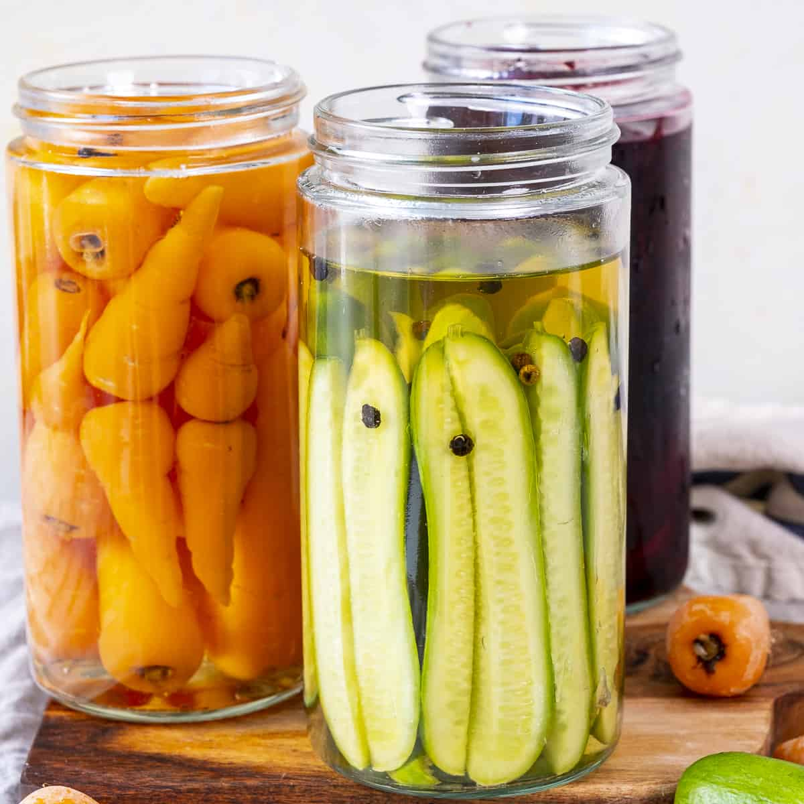

My Prickle Brine recipe

Description
- 1/2 Cup Vinegar
- 1/2 Cup Water
- 1 tbsp Sugar
- 1 tsp Salt
- 1/2 tsp Allspice
- 1/2 tsp Peppercorns
- 1/2 tsp Black Mustard Seeds
- 1 Bayleaf
- Put jars in a pot with cold water and let it boil.
- Add above ingredients to another pot.
- While waiting for the brine to boil, remove hot jars from boiling water.
- Fill the jars with cut pickling veggies.
- Add boiling brine to veggies and immediately close with lid.